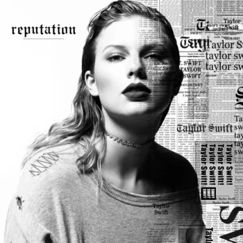

Taylor Swift
Taylor Alison Swift is an American singer-songwriter. Her discography spans multiple genres,
and her narrative songwriting—often inspired by her personal life—has received critical praise.

Biography
Taylor Alison Swift was born on December 13, 1989, in Reading, Pennsylvania, to Andrea (Finlay),
a one-time marketing executive, and Scott Kingsley Swift, a financial adviser. Her ancestry includes
German and English, as well as some Scottish, Irish, Welsh and 1/16th Italian. She was named after James Taylor,
and her mother believed that if she had a gender neutral name it would help her forge a business career.
Taylor spent most of her childhood on an 11-acre Christmas tree farm in Montgomery County, Pennsylvania.
When she was nine years old the family moved to Wyomissing, PA, where she attended West Reading Elementary Center
and Wyomissing Area Junior/Senior High School. Taylor spent her summers at her parents' vacation home at the Jersey shore.
Her first hobby was English horse riding. Her mother put her in a saddle when she was nine months old and Swift later competed
in horse shows. At the age of nine she turned her attention to musical theatre and performed in Berks Youth Theatre Academy
productions of "Grease", "Annie", "Bye Bye Birdie" and "The Sound of Music". She traveled regularly to New York City
she became interested in country music. At age 11, after many attempts, Taylor won a local talent competition by
singing a rendition of LeAnn Rimes' "Big Deal", and was given the opportunity to appear as the opening act for Charlie Daniels
at a Strausstown amphitheater. This interest in country music isolated Swift from her middle school peers.
Discography
American singer-songwriter Taylor Swift has released 10 studio albums,
2 re-recorded albums, 3 live albums, total of 15 albums plus beautiful
eyes Walmart exclusive for a grand total of 16, 19 extended plays, 1
single album, and 61 singles as a lead artist so far.
1. "Tim McGraw" 3:54
2. "Picture to Burn" 2:55
3. "Teardrops On My Guitar" 3:35
4. "A Place In This World" 3:22
5. "Cold As You" 4:01
6. "The Outside" 3:29
7. "Tied Together With A Smile" 4:11
8. "Stay Beautiful" 3:58
9. "Should've Said No" 4:04
10. "Mary's Song (Oh My My My)" 3:35
11. "Our Song" 3:2
1. "Fearless" 4:01
2. "Fifteen" 4:54
3. "Love Story" 3:55
4. "Hey Stephen" 4:14
5. "White Horse" 3:54
6. "You Belong With Me" 3:51
7. "Breathe" (featuring Colbie Caillat) 4:23
8. "Tell Me Why" 3:20
9. "You're Not Sorry" 4:21
10. "The Way I Loved You" 4:04
11. "Forever & Always" 3:45
12. "The Best Day" 4:05
13. "Change" 4:40
1. "Mine" 3:50
2. "Sparks Fly" 4:20
3. "Back to December" 4:53
4. "Speak Now" 4:00
5. "Dear John" 6:43
6. "Mean" 3:57
7. "The Story of Us" 4:25
8. "Never Grow Up" 4:50
9. "Enchanted" 5:53
10. "Better than Revenge" 3:37
11. "Innocent" 5:02
12. "Haunted" 4:02
13. "Last Kiss" 6:07
14. "Long Live" 5:17
1. "State Of Grace" 4:55
2. "Red" 3:43
3. "Treacherous" 4:02
4. "I Knew You Were Trouble" 3:39
5. "All Too Well" 5:29
6. "22" 3:52
7. "I Almost Do" 4:04
8. "We Are Never Ever Getting Back Together" 3:13
9. "Stay Stay Stay" 3:25
10. "The Last Time"(featuring Gary Lightbody)4:59
11. "Holy Ground" 3:22
12. "Sad Beautiful Tragic" 4:44
13. "The Lucky One" 4:00
14. "Everything Has Changed" (featuring Ed Sheeran) 4:05
15. "Starlight" 3:40
16. "Begin Again" 3:57
1. "Welcome To New York" 3:32
2. "Blank Space" 3:51
3. "Style" 3:51
4. "Out Of The Woods" 3:55
5. "All You Had To Do Was Stay" 3
:13
6. "Shake It Off" 3:39
7. "I Wish You Would" 3:27
8. "Bad Blood" 3:31
9. "Wildest Dreams" 3:40
10. "How You Get The Girl" 4:07
11. "This Love" 4:10
12. "I Know Places" 3:15
13. "Clean" 4:30

1. "...Ready For It?" 3:28
2. "End Game" (featuring Ed Sheeran and Future)4:04
3. "I Did Something Bad" 3:58
4. "Don't Blame Me" 3:56
5. "Delicate" 3:52
6. "Look What You Made Me Do" 3:31
7. "So It Goes..." 3:47
8. "Gorgeous" 3:29
9. "Getaway Car" 3:53
10. "King Of My Heart" 3:34
11. "Dancing With Our Hands Tied" 3:31
12. "Dress" 3:50
13. "This Is Why We Can't Have Nice Things" 3:27
14. "Call It What You Want" 3:23
15. "New Year's Day" 3:55

1. "The 1" 3:30
2. "Cardigan" 3:59
3. "The Last Great American Dynasty" 3:51
4. "Exile" (featuring Bon Iver) 4:45
5. "My Tears Ricochet" 4:15
6. "Mirrorball" 3:29
7. "Seven" 3:28
8. "August" 4:21
9. "This Is Me Trying" 3:15
10. "Illicit Affairs" 3:10
11. "Invisible String" 4:12
12. "Mad Woman" 3:57
13. "Epiphany" 4:49
14. "Betty" 4:54
15. "Peace" 3:54
16. "Hoax" 3:40
1. "Willow" 3:34
2. "Champagne Problems" 4:04
3. "Gold Rush" 3:05
4. "'Tis the Damn Season" 3:49
5. "Tolerate It" 4:05
6. "No Body, No Crime" (featuring Haim)3:35
7. "Happiness" 5:15
8. "Dorothea" 3:45
9. "Coney Island" (featuring The National) 4:35
10. "Ivy" 4:20
11. "Cowboy like Me" 4:35
12. "Long Story Short" 3:35
13. "Marjorie" 4:17
14. "Closure" 3:00
15. "Evermore" (featuring Bon Iver) 5:04
1. "Lavender Haze" 3:22
2. "Maroon" 3:38
3. "Anti-Hero" 3:20
4. "Snow on the Beach" (feat. Lana Del Rey) 4:16
5. "You're on Your Own, Kid" 3:14
6. "Midnight Rain" 2:54
7. "Question...?" 3:30
8. "Vigilante Shit" 2:44
9. "Bejeweled" 3:14
10. "Labyrinth" 4:07
11. "Karma" 3:24
12. "Sweet Nothing" 3:08
13. "Mastermind" 3:11